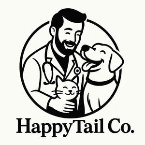

Trade Mark Journal No.2025/042 17 October 2025
UK00004274208 6 October 2025 (3,5)

- Class 3
- Shampoos for animals [non-medicated grooming preparations]; Shampoos for pets [non-medicated grooming preparations]; Animal grooming preparations; Bath preparations for animals; Non-medicated beauty preparations; Non-medicated toiletry preparations; Non-medicated skincare preparations; Non-medicated skin care preparations; Non-medicated massage preparations; Non-medicated cosmetics and toiletry preparations; Non-medicated bath preparations; Bath preparations (Non-medicated -); Non-medicated body care preparations; Dental care preparations for animals; Oral care preparations [non-medicated]; Non-medicated toilet preparations; Foot care preparations (Non-medicated -); Hair grooming preparations; Cleaning preparations for animal cages; Non-medicated sun care preparations; Non-medicated face care preparations; Non-medicated lip care preparations; Non-medicated hair treatment preparations for cosmetic purposes; Non-medicated pet shampoos; Preparations and products for fur care; Non-medicated cosmetics; Cosmetics for animals; Baby care products (Non-medicated -); Non-medicated shampoos; Cosmetics preparations; Shaving preparations; Non-medicated bubble bath preparations; Shampoo for animals; Cleaning preparations for use in livestock farming; Deodorants for animals; Eye care products, non-medicated; Hair care preparations; Non-medicated preparations for the relief of sunburn; Cosmetic hair care preparations; Facial care preparations; Skin care products for animals; Bath preparations, not medicated; Skin care oils [non-medicated]; Non-medicated lotions; Salves [non-medicated]; Beard care preparations; Sun-tanning preparations [cosmetics]; Hair cleaning preparations; Non-medicated mouth washes for pets; Skin care preparations; Non-medicated oils; Non-medicated soaps; Non-medicated hair lotions; Depilatory preparations.
- Class 5
- Neutraceutical preparations for animals; Pharmaceutical preparations for animals; Medicated hair care preparations; Veterinary preparations and substances; Pharmaceutical preparations for animal skincare; Antiparasitic preparations for pets; Medicated toiletry preparations; Medicated skin care preparations; Veterinary preparations; Medicated supplements for foodstuffs for animals; Oral care preparations [medicated]; Neutraceutical preparations for humans; Hygienic preparations for veterinary use; Pharmaceutical preparations for the treatment of worms in pets; Therapeutic medicated bath preparations; Skin treatment [medicated] for animals; Medicated preparations for skin treatment; Preparations for use as additives to food for human consumption [medicated]; Food additives (Medicated -) for animals; Bath preparations, medicated; Medicated bath preparations; Animal dips [preparations]; Medicated toilet preparations; Medicated lip care preparations; Feeding stimulants for animals; Medicated mouth care preparations; Preparations for making medicated beverages; Preparations for destroying noxious animals; Pharmaceutical preparations for hair care; Sanitary preparations for veterinary use; Medicated sunscreen preparations; Anti-infective preparations for veterinary use; Dental preparations and articles, and medicated dentifrices; Pharmacological preparations for skin care; Pharmaceutical products for skin care for animals; Dietetic preparations for children; Dog lotions for veterinary purposes; Medicated additives for animal foods; Pharmaceutical preparations for skin care; Skin care (Pharmaceutical preparations for -); Medicated supplements for animal feedstuffs; Biological preparations for veterinary purposes; Bacterial preparations for veterinary purposes; Medicated foot bath preparations ; Medicated shampoos for pets; Cantharides preparations for veterinary use; Veterinary vaccines for bovine animals; Medicines for animals; Medicated mouth treatment preparations; Pharmaceutical products and preparations for hydrating the skin during pregnancy; Chemical preparations for veterinary purposes; Pharmaceutical preparations for veterinary use.
artcube international limited